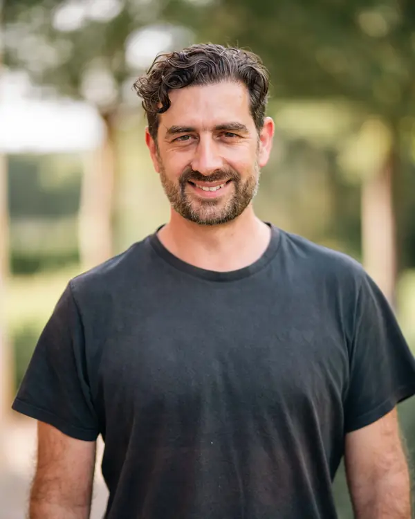

Alignment
Spiritual direction
For Christian founders and leaders. Unhurried conversations about where God is at work in your life and leadership, and how you might respond.
Spiritual direction & coaching
I walk with Christian founders and leaders who want to build with integrity and stay true to their calling. And I give away Wisdograms: one-page maps of timeless wisdom for building and leading.
Wisdograms™
A Wisdogram maps a piece of timeless wisdom on a single page, anchored in scripture, so you can see where you are and what might come next.
Building and leading bring pressures that can pull us off course, away from God’s ways and from our calling. I’ve seen it in my own life and in many around me. It’s why I love walking with leaders who want to build with integrity and effectiveness, true to their calling.

About
I’m a spiritual director and coach, and I’m fluent in startups, business and cross-cultural venture building.
I started my first business in tourism in western China in 2007, moved into coffee in the UK in 2017, and have been part of many other ventures along the way. I’m a Christian, and the founder of L & K Solutions Ltd, the business I run with my wife, Kirti.
I understand both the boardroom (or the kitchen-table startup) and the life of spiritual formation, and I love it when the two meet.
More about me →Who I work with
Where are you right now?
Tap the one that sounds most like you.
You want what you’re building to stay in step with what God has called you to, and to notice where He is at work as you lead.
Spiritual direction ↓The load is heavy and the noise is loud. You want clarity, and a steadier way to lead and live.
Life coaching ↓Something is ending or beginning: a role, a venture, a season. You want to move through it well and come out clear.
Transition coaching ↓Alignment
For Christian founders and leaders. Unhurried conversations about where God is at work in your life and leadership, and how you might respond.
Pressure
For founders and leaders who want clarity about their life and work, drawing on CliftonStrengths and other tools.
Transition
For a season of change: a new role, a venture ending or starting, a shift in vocation. Aiming for clarity rather than a deadline.
How it works
30 or 45 minutes on Zoom. A real conversation, not a pitch.
If it seems a good fit, I’ll write you a clear proposal for how we might work together.
In person or on Zoom, at a rhythm that suits you.
We’ll talk about the investment on our first conversation.
Kind words
I have done hours of coaching, but the time that I have spent with Luke has been the greatest value by far.
As a coach, Luke is the perfect blend of brilliant mind and shepherd’s heart.
Wisdograms and the coaching along side, has been a game changer for my own business.
I quickly felt seen and understood by Luke which developed a sense of safety early on.
Read along
Posts for people building and leading, drawn from scripture, practice and the questions that come up when faith and work share the same space.
One-page maps of wisdom for building and leading, each anchored in scripture, with the story behind each one.
A book for founders and leaders, drawn from Exodus, published chapter by chapter as I write it.
No paywalls. Freely given.
Questions
Whether you stay for the writing or we end up walking together more closely, I’m glad you’re here.
Take what serves you. And if something stirs and you’d like to talk, the door is open.